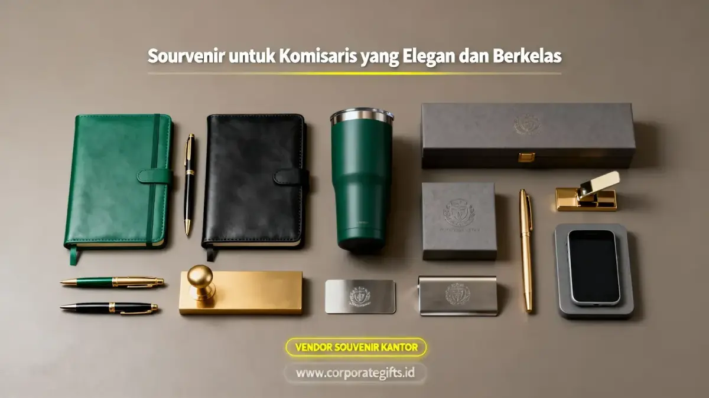

Corporate Gifts ID - Souvenir untuk komisaris adalah hadiah korporat kelas atas (prestigious corporate gift) yang dirancang khusus untuk jajaran dewan komisaris pada momen resmi seperti Rapat Umum Pemegang Saham (RUPS), pelantikan jabatan, seremoni apresiasi tahunan, maupun penutupan proyek strategis. Tujuh pilihan souvenir komisaris paling elegan yang mampu mengangkat wibawa dan reputasi perusahaan meliputi executive leather set, exclusive desk name plate, smart pen metal executive, desk clock kayu eksotis, corporate gift box magnetik, plakat premium akrilik lapis emas, serta signature crystal award.
Bagi pemegang fungsi pengawasan tertinggi dan penentu arah kebijakan organisasi, pemberian cinderamata bukan sekadar tradisi seremonial biasa. Kualitas hadiah yang diserahkan menjadi representasi langsung dari martabat, skala bisnis, dan komitmen profesional perusahaan terhadap tata kelola perusahaan yang baik (Good Corporate Governance).
Poin Kunci Souvenir Dewan Komisaris:
- Standar Material Mewah: Gunakan bahan bermutu tinggi seperti kulit sapi asli (genuine leather), kristal optik K9, kuningan lapis emas, atau kayu solid pilihan.
- Subtle Branding: Sematkan logo korporat secara proporsional dan halus menggunakan teknik blind deboss atau grafir laser presisi.
- Packaging Hardbox Magnetik: Bungkus dalam kotak kado rigid tebal berlapis kain beludru untuk menghadirkan sensasi unboxing yang prestisius.
- Personalisasi Nama Khusus: Grafir nama lengkap dan gelar dewan komisaris pada produk demi menciptakan kesan penghormatan mendalam.
- Vendor Resmi B2B: Konsultasikan kurasi hadiah eksekutif bersama CorporateGifts.ID untuk jaminan kontrol kualitas tanpa cela dan garansi produk prima.
Kenapa Souvenir Komisaris Berbeda dari Hadiah Biasa?
Dewan komisaris mengemban tanggung jawab fiduciary dalam mengawasi jalannya roda bisnis perusahaan. Mereka terbiasa berinteraksi dengan instrumen bisnis bertaraf internasional, sehingga memiliki kepekaan tinggi terhadap kualitas dan estetika sebuah produk.
Menyerahkan souvenir berkualitas biasa kepada dewan komisaris berisiko mereduksi wibawa manajemen. Sebaliknya, cinderamata yang dikurasi secara teliti akan memperkokoh sinergi harmonis antara jajaran direksi, pemegang saham, dan dewan komisaris dalam jangka panjang.
5 Kriteria Utama Souvenir Layak untuk Dewan Komisaris
Agar cinderamata yang diberikan memenuhi standar etika protokoler korporasi kelas atas, perhatikan lima tolok ukur berikut:
- Material Berkualitas Tinggi: Bebas dari kesan sintetis murahan; prioritaskan logam padat, kulit sapi asli, atau kristal berkilau murni.
- Nilai Guna Nyata (High Functionality): Barang dapat digunakan dalam rutinitas kerja eksekutif, perjalanan dinas, atau dipajang elegan di meja pimpinan.
- Aplikasi Branding yang Halus: Menghindari logo ukuran raksasa; cukup ukiran tipis yang menyatu anggun dengan desain fisik item.
- Kemasan Hardbox Mewah: Dilengkapi busa EVA cetak presisi (die-cut) dan penutup magnetik beraksen pita emas atau perak.
- Sentuhan Personalisasi Individual: Menyertakan kartu ucapan resmi bertanda tangan direksi serta ukiran nama penerima pada bodi barang.
7 Rekomendasi Souvenir Komisaris Paling Diminati
Berdasarkan preferensi instansi BUMN, konglomerasi, dan korporasi multinasional, berikut 7 pilihan hadiah paling prestisius:
- 1. Premium Leather Set: Paket eksklusif berisi paspor cover kulit asli, dompet kartu berproteksi RFID, dan gantungan kunci elegan untuk mobilitas tugas internasional.
- 2. Exclusive Desk Name Plate: Papan nama meja berbahan kuningan solid berbalut plat emas atau kristal optik dengan ukiran laser nama dan jabatan.
- 3. Smart Pen Executive: Pulpen rollerball berbahan logam lapis krom/emas yang dipadukan dengan mata pena presisi buatan Jerman dan fungsi stylus digital modern.
- 4. Desk Clock Kayu Eksotis: Jam meja analog bermesin kuarsa senyap yang dibalut kayu walnut atau mahogany solid dengan finishing glossy mewah.
- 5. Executive Gift Box Corporate: Kotak kado magnetik bespoke berisi tumbler vakum premium, buku agenda kulit asli, dan powerbank logam bergaransi resmi.
- 6. Plakat Akrilik & Gold Layer: Plakat penghargaan berbahan akrilik optik tebal 20 mm dengan lempengan kuningan berpola etsa mikro.
- 7. Signature Crystal Award: Trofi kristal optik murni dengan teknologi ukiran laser 3 dimensi internal yang abadi dan tidak akan buram.

Kurasi item meja kerja eksekutif, pulpen metal, tumbler vakum, dan leather goods berlogo korporat.
Tabel Karakteristik & Momen Penyerahan Ideal
Berikut rangkuman komparasi ketujuh jenis souvenir komisaris untuk memudahkan seleksi pengadaan tim manajemen:
| Jenis Souvenir Komisaris | Karakteristik & Material Utama | Momen Penyerahan Ideal |
|---|---|---|
| Premium Leather Set | Kulit sapi asli, card holder RFID, cover paspor & dompet slim. | Kunjungan dinas luar negeri, tugas pengawasan lapangan. |
| Exclusive Desk Name Plate | Plat kuningan lapis emas / balok kristal optik dengan ukiran nama. | Pelantikan komisaris baru, serah terima jabatan (sertijab). |
| Smart Pen Executive | Pulpen metal presisi dengan stylus touch, kotak beludru, refill Jerman. | Penandatanganan RUPS, penutupan kerja sama strategis (M&A). |
| Desk Clock Kayu Eksotis | Kayu mahogany/walnut solid, mesin kuarsa senyap, aksen gold trim. | Anniversary perusahaan, cinderamata akhir tahun korporat. |
| Executive Gift Box | Kombinasi tumbler vakum, notebook kulit deboss, powerbank metal. | Paket apresiasi RUPS tahunan, perayaan milestone bisnis. |
| Plakat Akrilik & Gold Layer | Akrilik tebal 20 mm, plat etsa kuningan emas mikro, dudukan kayu. | Penghargaan kinerja pengawasan, kenang-kenangan purna tugas. |
| Signature Crystal Award | Kristal optik K9 murni dengan laser grafir 3D internal permanen. | Penghargaan tata kelola GCG, seremoni prestisius pemegang saham. |
Momen Formal Terbaik Memberikan Souvenir Kehormatan
Penyerahan souvenir kepada dewan komisaris umumnya dilaksanakan pada agenda-agenda seremonial dengan susunan protokoler resmi:
- Rapat Umum Pemegang Saham (RUPS): Agenda tertinggi perseroan untuk menyampaikan apresiasi atas supervisi dewan pengawas.
- Pelantikan & Pengukuhan Jabatan: Menandai dimulainya masa pengabdian anggota dewan komisaris yang baru terpilih.
- Perayaan Ulang Tahun Emas Perusahaan: Sebagai simbol penghormatan atas peran komisaris dalam mengawal pertumbuhan jangka panjang bisnis.
- Momen Purna Tugas (Retirement): Penghargaan paripurna atas dedikasi dan pengabdian selama masa periode jabatan.
Seni Personalisasi Nama dan Pesan Apresiasi
Tingkat kepuasan dewan komisaris akan berlipat ganda saat mereka melihat nama dan gelar resminya terukir secara presisi pada badan produk. Layanan kustomisasi di Corporate Gifts ID memungkinkan penerapan nama individual tanpa batasan jumlah pesanan minimum.
Dipadukan dengan sepucuk surat pengantar (executive greeting card) beramplop wax seal bertanda tangan direktur utama, hadiah kehormatan ini akan menjadi warisan cinderamata yang senantiasa dibanggakan di ruang kerja komisaris.
Pertanyaan Seputar Souvenir Komisaris (FAQ)

Ditulis oleh: Arinda Zakia
Senior Corporate Gifting SpecialistPraktisi pengadaan merchandise korporat, kurasi suvenir seminar fungsional, dan perancangan gift set B2B profesional di CorporateGifts.ID.
Lihat Profil Lengkap & Panduan Lainnya